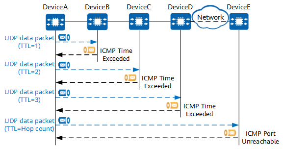

Tracert Fundamentals
The tracert function utilizes the ICMP error-reporting mechanism. You can send UDP packets with different TTL values from the source to the destination so that the packets will reach different hops on the network path. Each hop then sends ICMP error-reporting messages to the source.
Tracert Process
The packet exchange during a tracert operation is as follows:
- A user performs a tracert operation on the source (DeviceA) to send UDP packets (three packets by default) with the TTL value of 1 to the destination (DeviceE). The first packet uses port 33434 as the destination port by default, and the subsequent packets increase the port number by 1 in sequence. These specified ports are not the actual destination port.
- The first hop (DeviceB) receives the UDP packets. As the TTL value in the received packets is reduced to 0, the first hop sends three ICMP Time Exceeded messages to the source.
- After receiving the ICMP Time Exceeded messages sent by the first hop, the source determines that the first hop is reachable, and obtains the RTT (time difference between sending and receiving packets) in communication between the source and the first hop.
- The source continues to send three UDP packets with a TTL value of 2 to the destination. Similarly, after receiving the packets with the TTL value reduced to 0, the second hop sends ICMP Time Exceeded messages to the source.
- The source continues to send UDP packets by increasing the TTL value by 1 each time a packet is sent in order to test the reachability of each hop.
- Finally, the destination receives the UDP packets from the source. As the destination port specified in the packets is incorrect, the destination sends three ICMP Port Unreachable messages to the source, indicating that the destination port is unreachable.
- The source receives the ICMP Port Unreachable messages, indicating that the tracert process is completed. The command output on the source displays the reachability and RTT of each hop on the path from the source to the destination.
Figure 1 Packet exchange during a tracert operation
If no response packet is received within a specified period after a UDP packet is sent, a timeout prompt is displayed on the source. If a timeout prompt is displayed after the source sends a UDP packet with the configured maximum TTL value, the destination cannot be reached and the test fails.
Application Scenarios of Tracert
The tracert function can be used to detect paths on different networks. The following table describes its application scenarios.
Table 1 Application scenarios of tracertNetwork Type
|
Detection Item
|
Description
|
|---|
IP network
|
Path information of an IPv4 or IPv6 network
|
Detect the path between two devices on an IPv4 or IPv6 network.
|
SRv6 network
|
Path information of an SRv6 network
|
Detect the path between two devices on an SID-based network and an SRv6 TE Policy.
|
MPLS network
|
Path information of an MPLS network
|
Detect the path between endpoints of an LSP on an MPLS network.
|